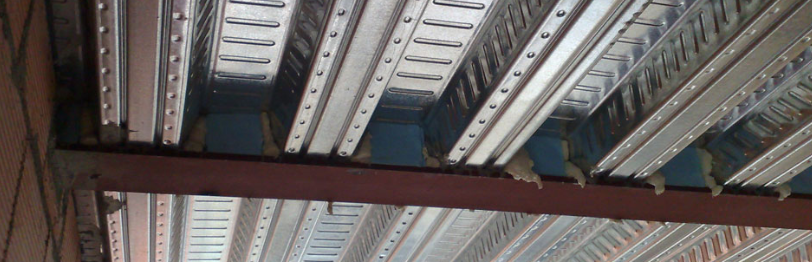

Panel de Composite
Si quieres que te asesoremos sobre si el panel composite
es lo que más te conviene a la hora de realizar el revestimiento de tu fachada,
no lo dudes, tenemos una gran experiencia en la fabricación y colocación de este
tipo de materiales.
Montajes de Trespa
Ofrece una solución que consta de lamas, elementos de fijación
y accesorios para el montaje. El cerramiento no solo es atractivo sino también altamente durarero.
Las lamas se someten a pruebas exhautivas de resistencia a los impactos y a los rayos uv.
Hormigón prefabricado
Contemplan una gran cantidad de productos que van desde los elementos estructurales
como pilares, vigas, etc., hasta los elementos más decorativos.
Nuestro Trabajo

Montajes de Canalones
Los canalones recogen el agua del tejado evitando
que caiga directamente a la pared y la moje. No tener canalones o no
estar en perfecto estado, tener grietas o estar obstruido, puede
acarrear problemas en la estructura de la casa.

Chapa Colaborante
la facilidad constructiva, la no contaminación de otros materiales,
la facilidad de acopio y limpieza, su función de encofrado y plataforma segura sobre la
que trabajar, el arriostramiento de la estructura y la facilidad de colocación de las instalaciones,
entre otras.


 Tlf:649974602 - 649974603 - 659767320
Tlf:649974602 - 649974603 - 659767320
 E-mail: montajesmonorte@gmail.com
E-mail: montajesmonorte@gmail.com